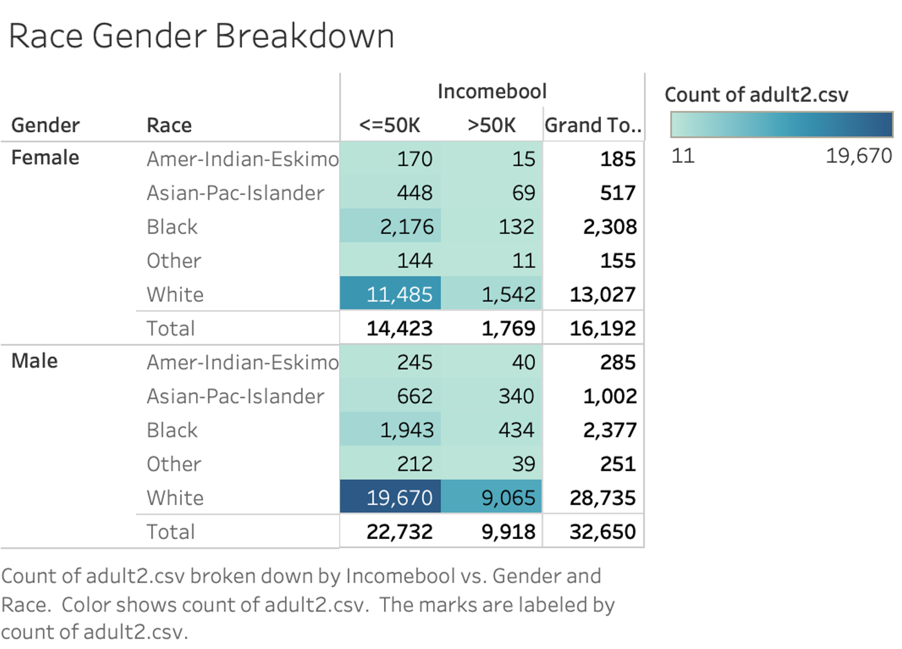
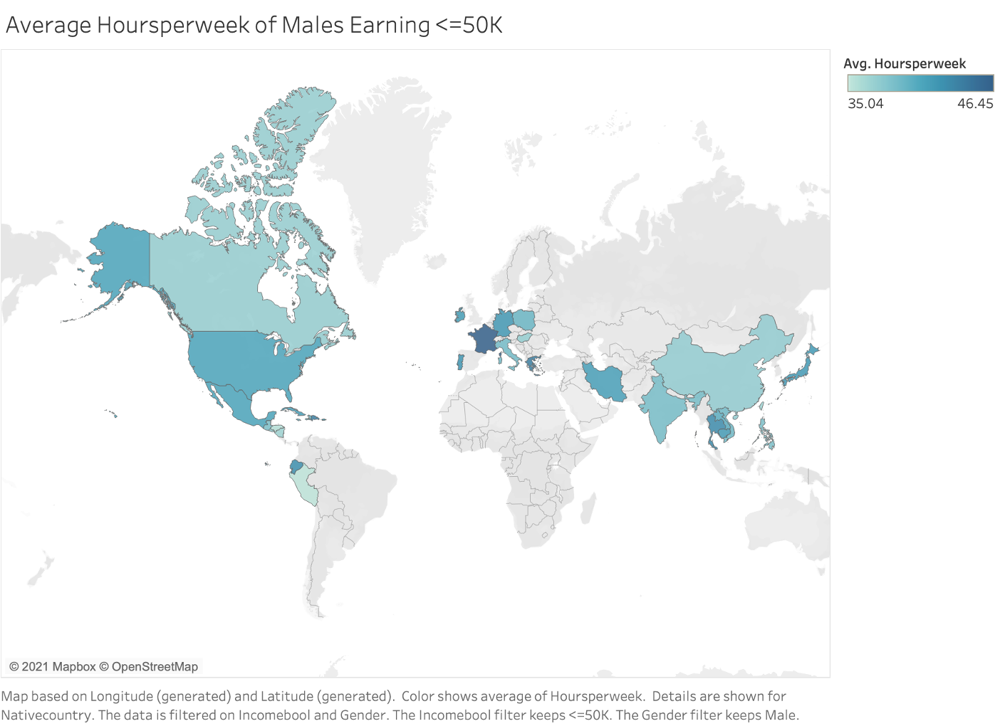

Below I use PostgreSQL to learn more about this income dataset.
This first query shows the total count of individuals earning over 50K and individuals earning less and 50K.
SELECT incomebool, COUNT(incomebool)
FROM income
GROUP BY incomebool;
Query Result:
| incomebool | count |
|---|---|
| >50k | 11687 |
| <=50K | 37155 |
Queries to understand the demographics of the whole dataset.
SELECT race, COUNT(race)
FROM income
GROUP BY race;
Query Result:
| race | count |
|---|---|
| Black | 4685 |
| Asian-Pac-Islander | 1519 |
| Amer-Indian-Eskimo | 470 |
| Other | 406 |
| White | 41762 |
SELECT gender, COUNT(gender)
FROM income
GROUP BY gender;
Query Result:
| gender | count |
|---|---|
| Female | 16192 |
| Male | 32650 |
Average age of anyone earning >50K broken up by race...
SELECT race, CEIL(AVG(age)) as AverageAge
FROM income
WHERE incomebool = '>50K'
GROUP BY race;
Query Result:
| race | averageage |
|---|---|
| Black | 45 |
| Asian-Pac-Islander | 43 |
| Amer-Indian-Eskimo | 41 |
| Other | 41 |
| White | 45 |
and gender.
SELECT gender, CEIL(AVG(age)) as AverageAge
FROM income
WHERE incomebool = '>50K'
GROUP BY gender;
Query Result:
| gender | averageage |
|---|---|
| Female | 43 |
| Male | 45 |
Using a subquery, I found the average hours worked per week by those earning >50K. Using that average, I found the number of hours worked per week by those earning >50k and working less than that average. I broke this query up by average per marital status.
SELECT maritalstatus, CEIL(AVG(incom.hoursperweek)) AS AverageHours
FROM income AS incom
WHERE incom.incomebool = '>50K' AND incom.hoursperweek < (
SELECT AVG(inc.hoursperweek)
FROM income as inc
WHERE incomebool = '>50K')
GROUP BY maritalstatus
ORDER BY AverageHours DESC;
Query Result:
| maritalstatus | averagehours |
|---|---|
| Seperated | 41 |
| Married-AF-spouse | 41 |
| Divorced | 40 |
| Never-married | 40 |
| Married-civ-spouse | 39 |
| Widowed | 37 |
| Married-spouse-absent | 36 |
Using a window function, I found the average hours per week based on country level. I used this average to find those who work the least compared to their country, and still earn >50K. Those in the ? workclass tended to work the least amount of hours and still make >50K.
SELECT age, race,workclass,gender,nativecountry,hoursperweek,education,maritalstatus,
ROUND((hoursperweek/AVG(hoursperweek) Over (PARTITION BY nativecountry)),2) AS hoursPercentage
FROM income
WHERE incomebool = '>50K'
ORDER BY hoursPercentage ASC
LIMIT 10;
| age | race | workclass | gender | nativecountry | hoursperweek | education | maritalstatus | hourspercentage |
|---|---|---|---|---|---|---|---|---|
| 62 | White | Private | Male | United-States | 1 | Bachelors | Married-civ-spouse | 0.02 |
| 58 | White | State-gov | Male | United-States | 1 | Doctorate | Married-civ-spouse | 0.02 |
| 65 | White | ? | Male | United-States | 1 | HS-grad | Married-civ-spouse | 0.02 |
| 32 | White | ? | Female | United-States | 2 | HS-grad | Married-civ-spouse | 0.04 |
| 81 | White | Private | Male | United-States | 2 | Prof-school | Married-civ-spouse | 0.04 |
| 67 | White | ? | Male | United-States | 2 | HS-grad | Married-civ-spouse | 0.04 |
| 66 | White | ? | Male | United-States | 2 | 11th | Married-civ-spouse | 0.04 |
| 61 | White | ? | Male | United-States | 2 | Assoc-acdm | Married-civ-spouse | 0.04 |
| 70 | White | ? | Male | United-States | 2 | Doctorate | Married-civ-spouse | 0.04 |
| 79 | White | ? | Female | United-States | 2 | Assoc-acdm | Married-civ-spouse | 0.04 |
This is the youngest person earning >50K.
SELECT age, race, gender, hoursperweek, nativecountry
FROM income
WHERE incomebool = '>50K'
ORDER BY age ASC
LIMIT 1;
Query Result:
| age | race | gender | nativecountry | hoursperweek | education | maritalstatus |
|---|---|---|---|---|---|---|
| 19 | White | Female | United-States | 20 | Some-college | Never-married |
This is the oldest person earning <=50K.
SELECT age, race, gender, nativecountry, hoursperweek, education, maritalstatus
FROM income
WHERE incomebool = '<=50K'
ORDER BY age DESC
LIMIT 1;
Query Result:
| age | race | gender | nativecountry | hoursperweek | education | maritalstatus |
|---|---|---|---|---|---|---|
| 90 | White | Male | United-States | 60 | Prof-school | Widowed |
Demographics break down:
Map showing average hours worked by males earning >50K.
